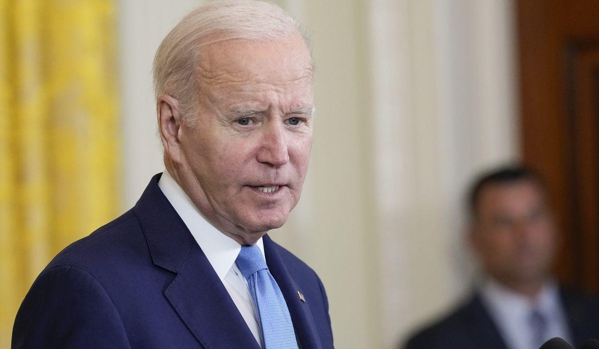

Joe Biden calls 'malarkey' the foreign bribery claims against himPresident Biden on Thursday said claims he took bribes from foreigners are “malarkey” and he defended the independence of the Justice Department as it targets former President Donald Trump. Mr. Biden was responding to Republicans who secured a whistleblower document on Thursday alleging that Mr. Biden engaged in a $5 million bribery scheme during his time as vice president in the Obama administration. “Where’s the money? I’m joking. It’s a bunch of malarkey,” Mr. Biden said at the end of a press conference with U.K. Prime Minister Rishi Sunak. House investigators have been digging into the Biden family’s overseas businesses and secured the FBI document after a period of wrangling with FBI Director Christopher A. Wray, whom they threatened to hold in contempt of Congress. The White House and House Democrats say the bribery accusations never went anywhere because there is no evidence to back up claims of malfeasance. Rep. Nancy Mace, South Carolina Republican, said the situation merited a deeper look. “I call the balls and strikes and call it right down the middle. But it’s unconscionable the @FBI won’t tell us what they’ve done to investigate the President’s involvement in a multi-million dollar bribery scheme,” she tweeted. “It’s undeniable this document is legitimate.” House investigators are scrutinizing Mr. Biden, his son Hunter, and other Biden family members as federal prosecutors accelerate their investigations into Mr. Trump’s post-2020 election actions and its efforts to retrieve classified documents from Mr. Trump’s Mar-a-Lago estate in Florida. Mr. Trump says there is a double standard at play in which the Bidens remain unscathed while he faces a possible indictment. Mr. Biden rebuked the former president on Thursday. “You’ll notice, I have never once, not one single time, suggested to the Justice Department what they should do or not do, relative to bringing a charge or not bringing a charge,” Mr. Biden said. “I’m honest.” Please read our comment policy before commenting. |
 |